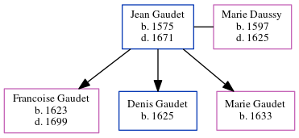

Jean Gaudet 1575 - 1671
[ Home ] | [ Calendar ] | [ Surnames Index ] | [ Census Index ] | [ Family History ]Jean Gaudet, the 11 times great-grandfather of Michele Copp (née Phillips), was born in Loudun, Vienne, Poitou-Charentes, France in 15751 and married Marie Daussy (with whom he had 3 children: Francoise, Denis and Marie) in 15981.
He died in 1671 in Port Royal, , New Brunswick, Canada.
Children
- Francoise was born in 1623
- Denis was born in 1625
- Marie was born in 1633
Citations
- U.S. and International Marriage Records, 1560-1900 Online publication - Provo, UT, USA: The Generations Network, Inc., 2004.Original data - This unique collection of records was extracted from a variety of sources including family group sheets and electronic databases. Originally, the information was deriv
Family Tree
Generated by ged2site. Last updated on Jun 6, 2024